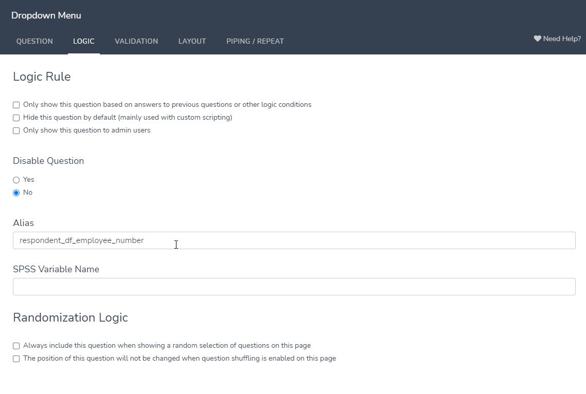

Performance Management and Surveys¶
Surveys¶
Set Up¶
Create a new survey on Alchemer (formerly SurveyGizmo).
Create Name question for the survey taker
Under Logic, alias it as “respondant_df_employee_number” 
If piping from Survey HQ, create a default answer with a URL parameter (best practice is to match the Alias and the parameter)
Create any additional piping/logic questions (see examples below). Be sure to add aliases and default answers. You can hide questions as needed under Logic -> Hide Question By Default

Continue creating questions and setting up the survey. Be sure to alias each question.
When done, go to Style -> Themes -> Your Theme Library and apply the KTAF survey theme

Under Share, create a new campaign (outlined below).
The survey will now be ready to flow into gabby. You’ll need to adjust views and create an output view. Additionally, if you want to create question options (eg: Plug in a list of all active staff members), you’ll need to adjust the questions_options tool. For questions where you’re updating question options, be sure to set the options to alphabetical under Layout.

Self & Others + Manager Assignments on the PM Management Document¶
Background¶
School Leaders and DSOs need to update managers and S&O survey assignments each survey round
PM Management document lives here
Timing: Happens during a predefined window ahead of each survey round, 2-3 weeks before a survey round opens
Steps to Update (Beginning Of Year)¶
Go to the PM Management Document.
Update dates for this round.
Insert any new schools (later: create links to filter views for each school).
In the S&O Assignments tab, unhide Column A, and run SQL query in gabby database.
Copy results table, and overwrite the first five columns in the S&O Assignments tab.
Remove any existing data in the S&O Assignments columns (Highlight all - Delete).
To create filter view for new schools:
Data > Filter Views > Create New Filter View
Name the filter the new school name
Set the range to A2 to End of Row, Last Column
Copy link for filter view, insert link on the start page of PM Management Document.
In the next few steps, we’ll plug in the information for the three survey management columns:
Should take surveys this round
TNTP/Insight Survey Assignment
Winter Engagement Survey Assignment
For column ‘Should take surveys this round.’ do the following:
Set the following groups to ‘Yes - Should take manager survey only’
Primary Site IN (Room 9, Room 10, Room 11)
Primary_job IN (Senior Custodian, Security, Custodian)
Set everyone else to ‘Yes’.
Later: be sure to ask the T&L, KIPP Forward, and Ops teams if they want to have teammates complete S&O surveys. If they do, those teammates will need to have Should take surveys this round to “Yes.”
For column ‘TNTP/Insight Survey Assignment’ do the following:
Create a temporary tab and put the TNTP Insight Survey assignments (that were most recently submitted to KIPP Foundation. It should in Box) into it
Index-match the TNTP/insight assignments into the ‘S&O Assignments’ tab
Copy the data and paste values back into the tab (so that the formula is overwrite)
Delete the temporary tab
For column ‘Engagement Survey Assignment’ do the following:
Unhide the ‘Engagement Survey Assignment’ tab. This tab is a dictionary of titles to ‘Engagement Survey Assignment’ selection.
Index-match the engagement survey assignment dictionary from the ‘Engagement Survey Assignment’ tab into the ‘S&O Assignments’ tab
For any job titles that do not have an engagement survey assignment, update the dictionary with the correct assignment (check if you’re unsure)
Copy the data and paste values back into the tab (so that the Index-match formula is overwritten).
Re-hide the ‘Engagement Survey Assignment’ tab
Steps to Update (Middle Of Year & End of Year)¶
Go to PM Management Document.
Update dates for this round.
Duplicate ‘S&O Assignments’ tab. Run SQL Query (as in BOY). In the next few steps, you’re going to update the survey roster and keep the survey assignments from last round
Go back to the original ‘S&O Assignment’ tab
Copy results table, and overwrite the first five columns in the S&O Assignments tab.
Delete data in ‘S&O Assignments’ columns and in the columns (referred to below as the three survey management columns)
Should take surveys this round
TNTP/Insight Survey Assignment
Winter Engagement Survey Assignment
Run INDEX MATCH to ‘S&O Assignments’ (Original) to pre-populate assignments in the three survey management columns and in the S&O assignments columns from last round.
Formula:
=IFERROR(INDEX('Copy of S&O Assignments'!$A$2:$T$3566,MATCH($A3,'Copy of S&O Assignments'!$A:$A,0),MATCH(K$2,'Copy of S&O Assignments'!$2:$2,0)),"")Still in the original ‘S&O Assignments’ tab, highlight the columns with the S&O assignments and the three survey management columns (H-T in the screenshot below). Copy the data, and repaste the values into the cells. You are overwriting the index-match formula with the raw assignments.
Delete the ‘Copy of S&O Assignments’ tab
Final Checks Before Sending to DSOs and School Leaders¶
Spot check some managers in column “ADP Manager + Whetstone Coach [Do Not Edit]” to ensure that the feed is correct
Check the ‘Survey Audits’ tab to make sure the columns are lining up and that the counts are working properly
Go to the ‘Teacher Goals Exemptions’ tab. This tab contains a record of all staff exempted from Teacher Goals in prior and current years. A hidden Column A automatically tags the current year to new entries. Rows with prior year entries are hidden.
Update the dates in the headers
In the beginning of the year, Update the formula that’s hidden in Column A, so that any new entries are tied to the correct year
Hide Column A and any rows records that were submitted for previous school year
Double Check the links on the ‘S&O Start Here’ tab
Insight Survey Tracking¶
Updating TNTP Completion Data
So, what’s actually happening on all of the tabs of the PM Management Document?¶
Content TBD
Survey Tracker¶
Background¶
Ops teams and leadership teams use the survey tracker to ensure all staff complete their surveys
The tracker updates 1x daily from SurveyGizmo/Alchemer
It is embedded in this Zendesk article
Steps to Set up Prior to Survey Round¶
Open Survey Tracker v2 in Tableau Desktop
Ensure that the correct assignment types are selected on the ‘Assignment Type’ filter (not the ‘Assignment Type (Filter)’)
Update the Academic Year filter
Update the Reporting Term filter
Double-check the dashboard is updating at 6am Eastern/3am Pacific
Survey HQ¶
Background¶
Survey HQ is where everyone goes to access surveys (except the TNTP Insight Survey)
The tracker updates 1x daily from SurveyGizmo/Alchemer
You can find it here
Steps to Setup Prior to Survey Round¶
Open ‘Personalized Survey Links’ in Tableau Desktop.
In Survey Links tab, ensure that the correct survey types are selected
Update the Academic Year filter
Update the Reporting Term filter
Double-check the dashboard is updating at 6am Eastern/3am Pacific
Survey Campaigns¶
Background¶
Surveys run on Alchemer (formerly SurveyGizmo). Below are steps to set up campaigns for each round of invitations, reminders, and completion trackers.
Steps to Create the Campaign¶
Go to the Survey you want to create a campaign for, click share, and Create New Tracking Link
Create Campaign (DO NOT CLONE!) - Name it ‘YEAR Survey Round’ (YYYY SO#, YYYY MGR#, or YYYY R9#)
In advanced settings, set link Behavior to “Everyone gets the same link (can take survey as many times as they want)”
In advanced settings, set the Auto Open/Close Link dates & times to the survey window
Steps to Extend a Campaign¶
Go to the Survey you want to create a campaign for, click share, and Create New Tracking Link
Create the new survey Campaign and name it YEAR Survey Round-Extension’ (YYYY SO#-Extension, YYYY MGR#-Extension, or YYYY R9#-Extension)
In advanced settings, set link Behavior to “Everyone gets the same link (can take survey as many times as they want)”
There are two options for tracking with the dates:
If you want to track surveys collected during the extension specifically, in advanced settings for the survey extension, set the Auto Open/Close Link dates & times to the survey extension window
If you want to track surveys collected during the extension as if they happened during the regular survey round, leave the dates in the extension campaign blank, but in advanced settings for the survey campaign, adjust the close date
Steps to Load the Survey Roster¶
In Python Anywhere, run:
datarobot/surveygizmo/sg_question_options_update.pySign into Python Anywhere (Kevin + Charlie have login access)
Go to the file: home/knjpythonanywhere/datarobot/surveygizmo/sg_question_options_update.ipynb
Run the Bash command in a new Bash console (this is in the comment at the top of the notebook):
cd ~/datarobot/datagun./bin/qgtunnel ~/.pyenv/versions/datagun/bin/python ./datagun/extract.py -C ./datagun/config/surveygizmo.jsonRun the first 5 cells in the notebook
You can run the last 3 cells if you’ve updated the list of universities (this requires generating a new list of universities and saving it as a CSV in data/undergraduate_institutions.csv
Download the roster from the PM Management document as a CSV, drop all columns besides employee number, name, and email (optional location, job_title).
Split ‘preferred_first’ and ‘preferred_last’ into two columns.
In the Survey Campaign, go to the Contacts tab and click “Add Contacts”
Upload CSV to Contacts in the campaign. Map column headers to fields.
Steps to Set Up Email Reminders¶
Set up Survey reminder schedule (for all surveys it’s Wednesday, Friday, Monday, Wednesday, Friday, Monday, Tuesday, Wednesday) - adjust links and custom fields in style and preview, check, “Disable all SurveyGizmo styling…” - you have to do this for every message

Adjust the email footer so that the unsubscribe button has this message next to it: “If you click to unsubscribe you will not receive important email updates to help complete surveys”
Send a test email, and once you’ve confirmed everything looks good, schedule sending the first email by clicking “3 Send Campaign” and then “Not Scheduled”
Add reminder emails, schedule them out, and add the automated reminder text to the top. Be sure to disable the Survey Gizmo Styling (like above)
Check the Reminder schedule when you’re done
Steps to Set Up Email Reminders¶
Respond to Zendesk tickets daily, use the Tier 1 Survey Playbook to respond to the most common issues
As major issues come in, check with CAO, ED, school leader, and DSO
Remove any deleted surveys by recording the survey response ID on the PM Management document
Confirm that the tracker is working properly
Confirm that responses are going into the response SQL view properly
Confirm that email reminders are going out as scheduled
Results Sharing & Close Out¶
Data Analysis¶
Refresh OneLink, PM Survey Results, and other relevant dashboards
Confirm that the numbers don’t look crazy (9-test)
Communication¶
Share out tentative results with core project owners
Share out results with School Leaders, DSOs, and TC
Change Survey Tracker refresh cycle to weekly
Record final survey numbers in the Survey Round-Up